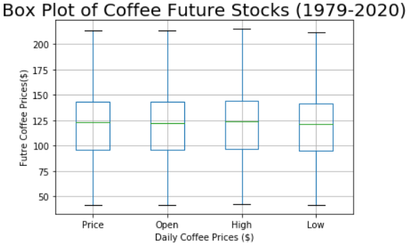
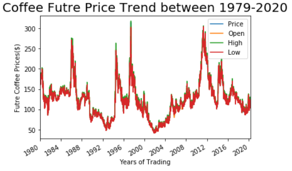
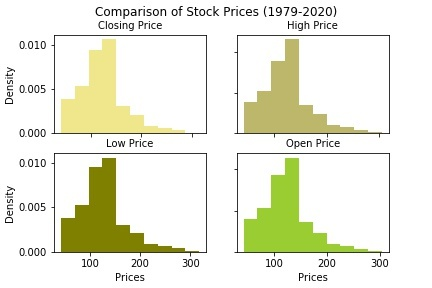

Coffee price stock data is from Investing.com, with a date range from December 27, 1979 to April 24, 2020. It includes closing price (Price), opening price (Open), high price (High), low price (Low), volume, and % change. df.describe() is used to get average, maximum, or minimum of coffee future price.
The closing, opening, high, and low prices tend to be similar as they show very close average, maximum, and minimum prices. Average stock price over 40 years is ~ $1.24. Maximum stock price is ~$3.00. Minimum stock price is ~$0.415 dollars. There is less than a $2 difference between the prices.
It is fair to say that price may fluctuate over time due to economic reasons, but prices remain relatively stable on any given day. Boxplot, histograms, and price trend graphs are visualized below to assist these findings.
  